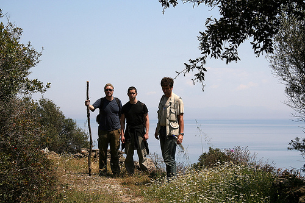
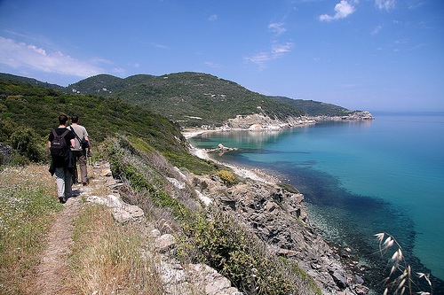

Na Svetoj Gori
sreda, 10. junij 2009. u 8:17 AM
Piše: Ljubar
Rubrike: Jahta, more, reka | Outdoors/Sport | Putovanja
Svako prolećno putovanje (do neke evropske prestonice, mađarske ili češke banje, italijanskih regiona) osvežava i popravlja raspoloženje, ali teško da bilo koja destinacija više od Svete Gore može čoveka da opusti, oslobodi nervoze i resetuje. Put na Svetu Goru je ujedno i hodočašće, i aktivan odmor uz šetnju i planinarenje, i meditiranje uz more, mesec i zvezde, mirise i zvuke.
Krenuli smo nas trojica kolima jedno jutro, a pred veče već bili parkirani u u Solunu, na ulici (sat parkiranja je 1.70 EUR, posle devet uveče – besplatno). Vreme do dolaska četvrtog člana ekipe, iz Atine, iskoristili smo da se popnemo na brdo, u stari deo grada. Dok je padala mediteranska noć, šetali smo izukrštanim, neverovatno živopisnim uličicama starog Soluna – mešavina novog i starog, bogatog i siromašnog, privatnog i javnog. Čudno je, zapravo, to što takav splet stepeništa, uličica, terasa, krovova, erkera, kamena i drveta, trgića, bašta, zidina i parkića ipak funkcioniše kao sastavni deo milionskog grada. Nekako je grad uspeo da organizuje i saobraćaj, i komunalnu infrastrukturu, i da uskladi sve interese – sa jedne strane zaštite istorijskog i ambijentalnog nasleđa, sa druge potreba koje nameće moderan život.
Poranivši sledeće jutro i kupivši neizbežne spanakopite (pite sa spanaćem) odvezli smo se do Uranupolisa, gde smo kola smestili na veliki, besplatani javni parking (bila su na istom mestu, nedirnuta i malo prašnjava, šest dana kasnije). U Uranupolisu je Svetogorska kancelarija gde se dobija viza za ulazak na Atos (Diamonitirion, 25 EUR), a odatle kreće i trajekt kojim se jedino i može dalje.
Prvo pristanište u kojem trajekt staje je upravo hilandarsko, Jovanjica. Tu čeka minibus koji vozi putnike na drugu stranu poluostrva, u Hilandar. Lep je prizor kada se posle više od pola sata penjanja i krivudanja po prvi put ugleda naš Hilandar, okružen šumom i brdima.
Glavni hilandarski trpezarac je Valjevac, iskušenik, brat Mile (ne malo menadžerskih sposobnosti zahteva to poslušanje, jer ponekad u manastirskoj trpezariji treba ugostiti i nahraniti i preko 200 ljudi). Sa velikim zadovoljstvom smo svih pet dana boravka pomagali bratu Milu u trpezariji i kuhinji, a na taj način bili smo i u prilici da dublje sagledamo neke aspekte manastirskog života.
Hilandar se nalazi na oko 2,5 km od mora. Taj prostor, od manastira do obale, divan je potez na kome se smenjuju šuma čempresa (kiparisa), maslinjaci, vinogradi, a na svakih par stotina metara je poneki istorijski, legendama oživljeni reper – krst cara Dušana, pirg kralja Milutina itd. U pristaništu (arsani), gde smo običavali da na molu dočekamo noć, jedno veče smo zatekli čoveka koji trozupcem lovi ribu. Zamakao je iza nekih stena, a posle izvesnog vremena pojavio se sa probodenim velikim ugorom (vrsta jegulje).
Ne treba posebno pominjati kakav mir vlada pored mora – čista voda, zvukovi insekata i ptica, poneka barka negde u daljini, miris morske vode i četinara, cveća. Posle sat ili dva, uz svetlost zvezda, vratimo se lagano do konaka i već oko deset spremamo za spavanje.

Lepota Svete Gore je u tome što, osim par osnovnih kolskih puteva (od pristaništa do manastira, od glavne luke Dafni do Kareje, i od Kareje prema glavnim manastirima) nema gotovo nikakve saobraćajne infrastrukture – tu su pešačke staze, ucrtane na kartama, ali koje mogu biti zarasle u bujnu vegetaciju, ukoliko nisu korišćenje neko vreme. Zato je svaki odlazak, i do Hilandaru najbližih manastira, mali izazov – do bugarskog Zografa treba dva sata, do grčkog Vatopeda skoro četiri.
Jednog dana stigli smo do Kareje, administrativnog središta monaške države. U karejske dve polu-ulice smešteni su kafana, par prodavnica suvenira, samousluga. Odmah u blizini su živopisni manastir Kutlumuš i skit svetog Andrije. U zaleđu dominira strmi, stenoviti, snežni vrh Atosa, koji se diže sa mora do čudesnih 2033 mnv. Ovog puta nismo imali dovoljno vremena da se uputimo na jug poluostrva odakle je jedino moguće popeti se na vrh („sa koga se vidi celo helenstvo”), pa ćemo tu akciju ostaviti za neki drugi put.
Ovoga puta smo, pak, iz Kareje otišli u Vatoped – najveći grčki manastir, skoro da je kao neki manji srednjovekovni utvrđeni grad. Bitan je i za našu istoriju – Sveti Sava je tu živeo i tu se sastao sa ocem Stefanom Nemanjom, upravo od Vatopeda je i dobio na korišćenje u to vreme napušteni Hilandar. Vatoped je između ostalog poznat i po neponovljivom pojanju, kao i po sedam čudotvornih ikona.

Staza odavde do Hilandara vodi prvo preko plaže i pored obale, pa liticom iznad mora, suvim rečnim koritom, onda dugo i uzbrdo kroz šumu, preko prevoja pa nizbrdo ponovo do mora... Sve u svemu, živopisno, raznobojno, mirisno, uzbudljivo. Ne znam da li još negde može da se doživi Mediteran u svoj svojoj nedirnutoj autentičnosti kao ovde.

Vekovna pravila života u Hilandaru, mir i sklad donekle remete samo kranovi, mehanizacija i radnici angažovani na rekonstrukciji izgorelih delova manastirskog kompleksa. Radi se sporo, ali temeljno i kvalitetno. Kažu da će rekonstrukcija trajati još najmanje pet godina. Ali, šta je pet godina naspram osam vekova!
Šta smo još tamo doživeli? Ostaće u pamćenju razgovori sa monasima i iskušenicima – iznenađujuće otvoreni, prisni i zanimljivi; susreti sa raznim interesantnim ljudima – iz Srbije, Bugarske, Grčke, ali i zapadnoevropljanima – Belgijancem, Nemcem, Amerikancem. Jendom prilikom smo, usred šume i već ubeđeni da smo zalutali, nabasali na četiri Engleza koji krče neku zaraslu stazu. Ispostavilo se da dolaze na Svetu Goru svake godine u organizaciji fondacije princa Čarlsa, borave tu po dve nedelje i bave se ovim i sličnim korisnim poslovima.
Na kraju, vraćajući se u Srbiju, doživeli smo da nam u sred solunske saobraćajne ludnice pukne guma. U nekim drugim okolnostima verovatno bismo zbog nervoze, vrućine, gužve i žurbe ‘pukli’. Međutim, sasvim normalno i brzo smo problem rešili, a ispunjenost pozitivnom energijom i nekim duševnim mirom još uvek traje, odolevajući svakodnevnim iskušenjima.
 RSS feed
RSS feed
 sadržaji se objavljuju pod
sadržaji se objavljuju pod
Komentari
Au, bravo!!!
Uživala sam čitajući i gledajući ovo.
etotako | 10.06.09 09:56
E bas ste mi ulepsali jutro. Rado bih se sada prosetala tako nekom zabacenom kozjom stazom s pogledom na more. Odlican putopis.
elektrokuhinja | 12.06.09 07:56